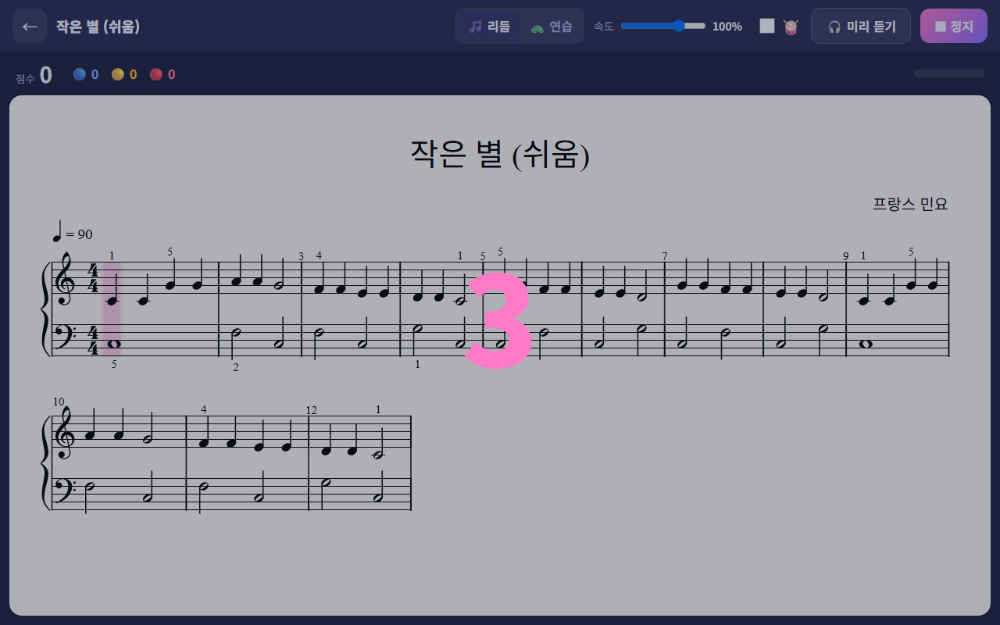
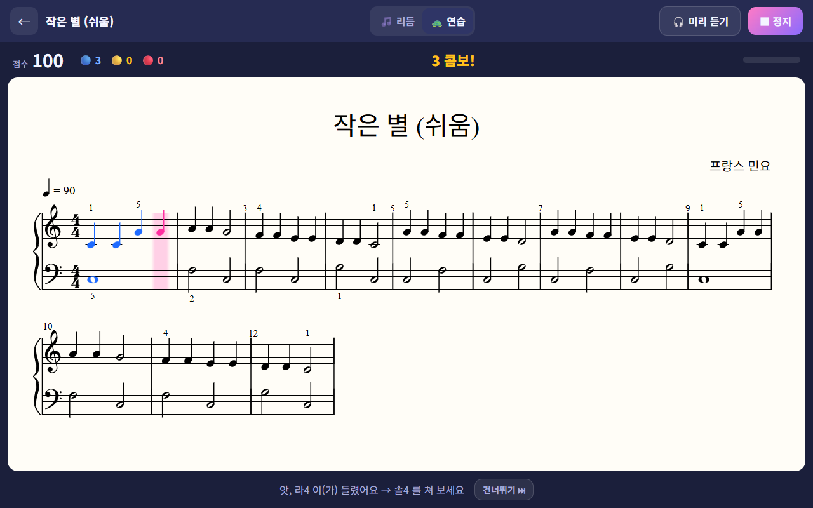
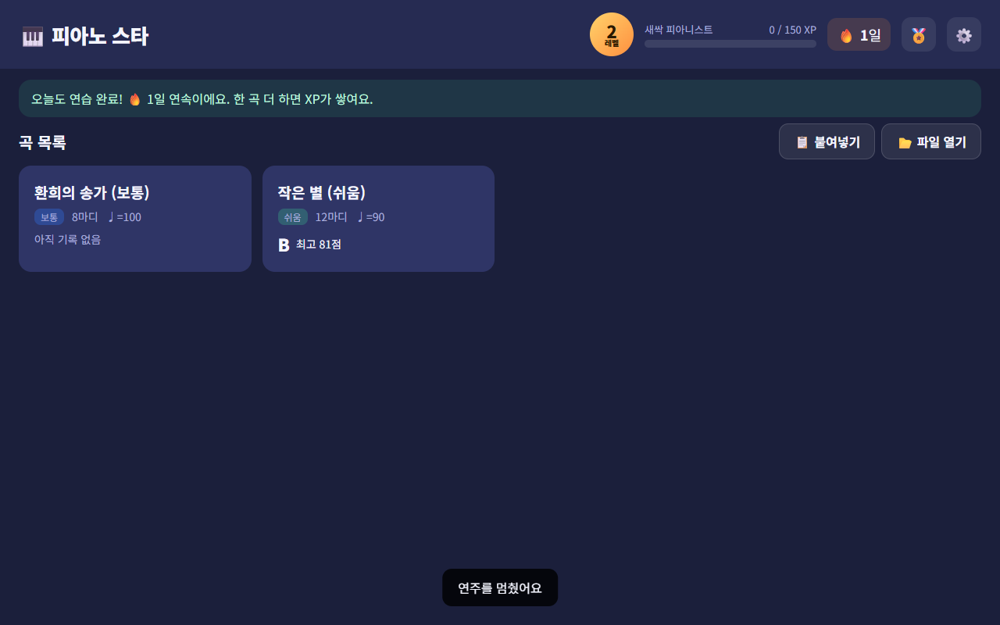
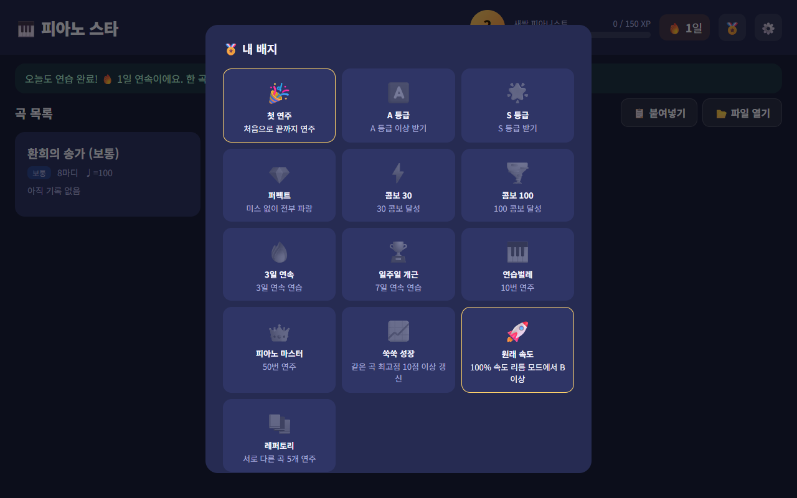

👨 1부. 처음 한 번 준비하기 10분
한 번만 해 두면, 그다음부터는 태블릿 하나로 악보 변환부터 연주까지 다 돼요. PC 가 없어도 돼요.
1
태블릿에 피아노 스타 설치하기
앱은 GitHub Pages(무료)에 올려져 있어요. 안드로이드 크롬은 https 주소에서만 마이크를 허용하기 때문이에요.
- 태블릿 크롬에서 앱 주소 접속:
https://아이디.github.io/piano-star/ - 크롬 메뉴 ⋮ → 홈 화면에 추가 → 이제 앱처럼 아이콘으로 실행!
- 처음 ▶ 시작을 누를 때 마이크 허용.
2
Claude 에 "악보 도우미" 프로젝트 만들기
Claude 앱(또는 claude.ai) 왼쪽 메뉴의 프로젝트에서 만들어요. 태블릿 Claude 앱에서도 똑같이 쓸 수 있어요.
- 프로젝트 → 새 프로젝트 → 이름:
🎹 피아노 악보 도우미 - 지침(Instructions) 칸에
프로젝트_지침.md내용을 전부 복사해서 붙여넣기 - 파일(Files)에 두 개 올리기:
악보플레이어_템플릿.html,twinkle_easy.musicxml
📁 세 파일은
docsclaude-project 폴더(그리고 GitHub 저장소의 같은 폴더)에 있어요.3
처음 한 번: 설정 맞추기 ⚙️
홈 화면 오른쪽 위 ⚙️ 를 눌러요. 태블릿을 피아노 보면대에 두고 하세요.
- 1🎤 마이크 테스트 — 도·미·솔을 쳐 보고 "들린 음: 도4, 미4, 솔4" 처럼 나오는지 확인. 잘 안 잡히면 마이크 감도를 올려요.
- 2🎯 자동 보정 — "딱" 소리 2번 뒤, 소리에 맞춰 가온 도를 8번. 태블릿 마이크의 지연 시간이 자동으로 맞춰져요.
- 3판정 너그러움 — 화음이 자꾸 노란색이면 '너그러움'으로. 실력이 늘면 '엄격'으로 도전!
리듬 모드에서 다 맞게 쳤는데 전부 노란색이면 → 자동 보정을 다시 해 주세요.
 1
2
3
1
2
3🎼 새 곡 넣기 태블릿만으로 OK
치고 싶은 곡이 생길 때마다 이렇게 해요. 따님 혼자서도 할 수 있어요.
📸 악보 사진·PDF
→💬 Claude 프로젝트에 새 채팅
→🎧 플레이어로 듣고 수정
→⬇ 받기 / 📋 복사
→🎹 피아노 스타에서 열기
1
프로젝트에서 새 채팅 → 악보 올리고 부탁하기
"🎹 피아노 악보 도우미" 프로젝트 안에서 새 채팅을 열고, 📎 로 악보 사진(여러 장 가능)이나 PDF 를 첨부해요.
예시 — 이 악보 쉬움 버전으로 바꿔줘
예시 — 이 노래 멜로디 악보인데 피아노 양손 악보로 만들어줘. 왼손은 쉽게
📸 사진 잘 찍는 법: 악보를 평평하게 펴고, 위에서 똑바로, 그림자 없이 밝게. 한 장에 한 페이지씩.
2
채팅창의 악보 플레이어로 들어보기 🎧
Claude 가 변환한 악보를 바로 들을 수 있는 플레이어로 보여줘요.
- ▶ 재생 · 속도 조절 · 양손 / 오른손 / 왼손 따로 듣기
- 마디 구간 + 반복 — 어려운 부분만 계속 듣기
- 그림을 누르면 그 마디부터 재생, 아래 건반에 누르는 음이 표시돼요
- 버전이 여러 개면 위쪽 목록에서 골라 비교

3
마음대로 바꿔 달라고 하기
들어보고 말로 부탁하면 플레이어가 새 버전으로 바뀌어요. 몇 번이든 OK!
더 쉽게 — 너무 어려워. 한 단계 더 쉽게 해줘
왼손 — 왼손이 어려워. 근음만 치게 바꿔줘
비교 — 왼손 두 가지 버전으로 만들어서 들려줘
조 — 샵이 너무 많아. 다장조로 옮겨줘
고치기 — 7마디 소리가 이상해. 원본이랑 다시 비교해줘
⚠️ 사진 악보는 몇 군데 틀릴 수 있어요. Claude 가 "확인 필요" 마디를 알려주니 그 부분을 특히 들어보세요.
4
피아노 스타 앱에 넣기
| 방법 | 플레이어에서 | 피아노 스타에서 |
|---|---|---|
| 파일로 | ⬇ MusicXML 받기 | 홈 → 📂 파일 열기 → 다운로드 폴더에서 선택 |
| 복사로 | 📋 MusicXML 복사 | 홈 → 📋 붙여넣기 → 곡 추가 |
🔁 같은 제목의 곡을 다시 넣으면 새 버전으로 교체되고, 점수 기록은 그대로 남아요.
⬇ 받기가 안 되는 화면이면 📋 복사를 쓰세요. ⬇ MIDI 받기는 다른 음악 앱에서 들을 때 써요.
⬇ 받기가 안 되는 화면이면 📋 복사를 쓰세요. ⬇ MIDI 받기는 다른 음악 앱에서 들을 때 써요.
👧 2부. 연주하기 태블릿
태블릿을 보면대에 가로로 세우고, 피아노 볼륨은 보통으로!
1
홈 화면에서 곡 고르기
- 1레벨 & 경험치 — 연주할수록 XP가 쌓이고 레벨업! 칭호도 바뀌어요 (새싹 피아니스트 → … → 전설의 마에스트로).
- 2🔥 연속 연습일 — 하루 한 곡만 쳐도 이어져요.
- 3곡 카드 — 난이도 태그(쉬움/보통/원곡)와 최고 기록이 보여요. 눌러서 시작!
- 4📋 붙여넣기 / 📂 파일 열기 — Claude 에서 만든 새 곡을 넣는 곳.
 1
2
3
4
1
2
3
42
모드와 속도 고르기
- 1🎵 리듬: 정해진 박자로 진행 (음 + 박자 판정) / 🐢 연습: 맞는 음을 칠 때까지 기다려줘요.
- 2속도 — 처음엔 70%부터. 잘 되면 80 → 90 → 100%!
- 3🥁 메트로놈 — 박자 소리를 같이 듣고 싶을 때 체크.
- 4🎧 미리 듣기 — 어떻게 치는 곡인지 먼저 들어봐요. 커서가 따라 움직여요.
- 5▶ 시작 — 처음 한 번은 마이크 허용을 눌러 주세요.
처음 보는 곡 추천 순서: 🎧 미리 듣기 → 🐢 연습 모드 → 🎵 리듬 70% → 리듬 100%
 1
2
3
4
5
1
2
3
4
53
카운트다운 후 연주 시작 (리듬 모드)
"딱·딱·딱·딱" 한 마디를 세어 줘요. 숫자가 끝나면 분홍색 커서가 있는 음부터 치면 돼요.
커서는 박자에 맞춰 자동으로 움직이고, 악보가 길면 자동으로 스크롤돼요.

4
치는 동안 음표 색이 바뀌어요
| 색 | 뜻 |
|---|---|
| 파랑 · 완벽! | 맞는 음을 박자에 딱 맞게 |
| 노랑 · 좋아요 | 음은 맞는데 조금 늦거나 빠름, 또는 화음 일부만 |
| 빨강 · 미스 | 틀린 음이거나 놓침 (무슨 음이 들렸는지 같이 보여줘요) |
- 1점수와 개수 — 지금까지의 정확도
- 2콤보 — 미스 없이 이어지면 숫자가 커져요! 10콤보마다 🔥
- 3마이크 막대 — 소리가 들리면 초록색으로 움직여요
 1
2
3
1
2
35
🐢 연습 모드: 천천히, 틀려도 괜찮아
박자 없이 맞는 음을 칠 때까지 기다려 줘요. 어려운 곡을 처음 익힐 때 좋아요.
- 아래쪽에 쳐야 할 음 이름이 나와요 (예: 솔4).
- 틀리면 "앗, 라4 이(가) 들렸어요 → 솔4 를 쳐 보세요" 처럼 알려줘요.
- 한 번에 맞히면 🔵, 1~2번 틀리고 맞히면 🟡, 3번 이상이면 🔴.
- 정 모르겠으면 건너뛰기 ⏭.

!6
최종 점수 & 등급
| 등급 | 점수 |
|---|---|
| S 🌟 | 95점 이상 |
| A | 85점 이상 |
| B | 70점 이상 |
| C / D | 50점 이상 / 그 아래 |
점수 = (🔵 × 1 + 🟡 × 0.5) ÷ 전체 음 × 100
- 1응원 메시지 — 지난번보다 오르면 "+12점!" 처럼 알려줘요.
- 2마디별 정확도 — 빨간·노란 마디 번호만 골라서 연습하면 점수가 쑥!
- 3XP · 새 배지 — 레벨업하면 팡파레 🎊
 1
2
3
1
2
37
기록이 쌓여요 📈
- 곡 카드에 최고 등급·점수와 점수 변화 그래프가 생겨요.
- 위쪽 메시지가 오늘 연습했는지, 연속 며칠째인지 알려줘요.
- 같은 곡을 여러 번 칠수록 그래프가 올라가는 걸 볼 수 있어요.

8
배지 모으기 🏅
홈 화면의 🏅 를 누르면 모은 배지와 아직 못 모은 배지가 보여요.
- 🎉 첫 연주 · 🅰️ A 등급 · 🌟 S 등급 · 💎 퍼펙트
- ⚡ 콤보 30 · 🌪️ 콤보 100 · 🚀 원래 속도로 B 이상
- 🔥 3일 연속 · 🏆 일주일 개근 · 📈 최고점 10점 갱신
- 🎹 10번 연주 · 👑 50번 연주 · 📚 다른 곡 5개

💡
더 재밌게 쓰는 팁
- 좋아하는 노래로! K-pop, 애니·게임 OST 악보를 넣어 달라고 하세요. 제일 효과가 커요.
- 가족 대결 — 같은 곡을 아빠도 쳐서 점수 내기 😄 (기록은 태블릿 하나에 같이 쌓여요)
- 속도 계단 — 70% 에서 A 받으면 80%, 그다음 90%… 한 단계씩 올려요.
- 빨간 마디만 3번 — 결과 화면의 빨간 마디만 연습 모드로 반복하고 다시 도전!
- 칭찬은 점수보다 "지난번보다 늘었네!" 로 해 주세요.